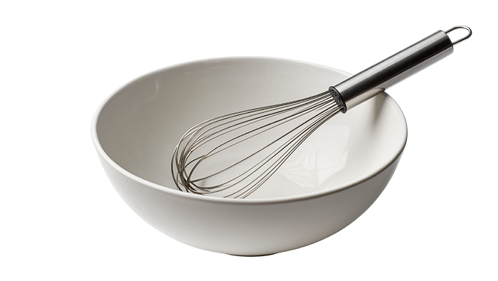

Recipe
Step 1. mix three egg yolks + sugar A (46g) + salt (a pinch!)
Step 2. add milk and mix with whisk
Step 3. double boil at 75 degrees to sterilize
Step 4. cool down to 40 degrees
Step 5. add rum + vanilla to the mix
Step 6. add 250g of mascarpone and mix with whisk
Step 7. put the mix in fridge
Step 8. mix whipping cream (230g) + sugar B (20g)
Step 9. whip two with hand mixer
Step 10. make coffee and cool down
Step 11. dip ladyfinger in coffee * dip it back and forth!
Step 12. put it in fridge for at least for 1 hr
Step 13. cocoa powder on top
Step 14. put in fridge for 1hr and would be more delcooios
